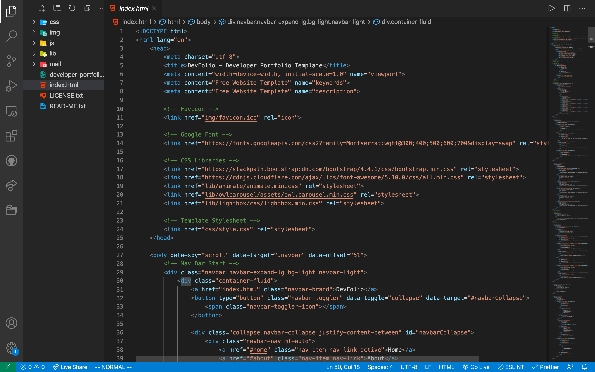
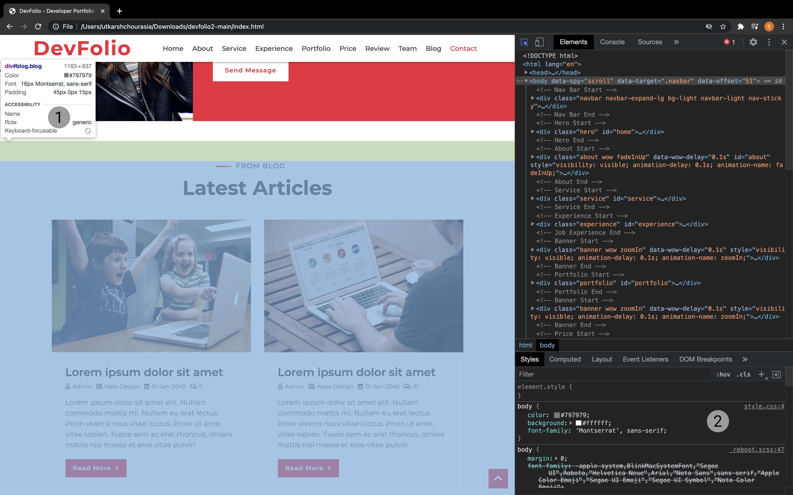

How to customize websites like a pro?
Building your own website is kinda hassle whether you're building it from scratch or using a website builder. This trick will enable you to customize a template according to your need easily.
Prerequisite:
- Prior knowledge of HTML, CSS, JS, etc.
- Prior knowledge of Chrome inspect element feature.
Step 1: Find your perfect template from a website or from HTML5

Step 1: Now, open the folder in an editor.
Step 1: In VS Code you can either install Live Preview or just open index.html file in chrome.
Also open the inspect element( Crtl/Cmd + Shift + I) menu.
Step 1: Now the most intreasting part is there. Choose to portion to edit or remove select it using Crtl/Cmd + Shift + C
Here you can navigate through various options like
- Name of the section(div) and various properties like padding, BG color, font size, font style, etc which can be changed in CSS files.
- Here you can navigate through more CSS properties and also find the file name and line no. of CSS file, this information can be used in IDE to edit elements.
Thank you